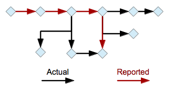

A Rational Computing Process: How and Why to Fake It
Parnas and Clement's 1986 paper "A Rational Design Process: How and Why to Fake It" [1] is one of the most widely read in the history of software engineering. In it, they argued that designing software according to some particular process isn't what matters; what does is creating documentation after the fact to make it look as though a rational process was followed so that other people can retrace the designers' thinking without heroic effort. Acknowledging the messiness of reality wasn't new: a century ago, Poincaré wrote that most mathematicians figured out the proof after they had figured out the answer, and everyone knows that the description of the experiment that's put in the paper is almost never how the experiment was actually done [2]:

A conversation with Cameron Neylon has got me thinking about how this relates to Software Carpentry. We don't know how scientists actually use computers day-to-day. We only know what they report after the fact, which (a) isn't much, and (b) is almost certainly a rational reconstruction rather than the messy reality.
What's more, traditional lectures don't show scientists how to navigate the false starts and circuitous by-ways of real coding. Instead, just as most mathematicians only show students finished, perfect proofs, most lectures and textbooks only show the program that worked, rather than its half-dozen incomplete or not-quite-right ancestors. (One of the reasons we now do most of our teaching via live coding is that it lets learners see the "two steps forward, one step back, google for a solution, and repeat" of real life.)
I think we need to teach people that there is a fundamental disconnect in all software development between repeatable, describable processes with flowcharts and checklists and the messy improvisation we all actually do. The problem is, many people crave the former even when they know it's a lie. As James Scott wrote in Seeing Like a State [3], large organizations almost always choose uniformity over productivity. From Stalin's forced collectivization of farming in the 1930s to the Rational Unified Process for software design, centralizers would rather have everyone do the same thing, even if it's wrong, than cope with the information overload and loss of control of individual agency.
The reason we don't teach people that rules are really just guidelines is that improvising requires judgment, which requires a deep knowledge of the problem domain and related solution techniques. Almost by definition, researchers are doing things that haven't been done before (at least, not exactly). This means that end-to-end "best practices" for scientific computing probably don't exist, because everyone's ends are different.
The best we can do, I think, is to show people the pieces out of which most of their competent peers assemble their daily work. What would help us do this is a collection of profiles of competent scientists' computational workflows–of how people who know what they're doing fit the pieces together when solving particular problems in particular domains. They would take time to produce (I think they'd have to be done by a neutral third party, since self-reporting is unreliable), and we'd have to be very careful that "this is how Jane does it" wasn't interpreted as "you must work this way", but showing people the actual process as well as its rational reconstruction would accelerate uptake of better practices like nothing else could.
- Paywalled, of course, since that's how the IEEE helps ideas spread, but PDFs are available on the web.
- This rational reconstruction is similar to program slicing, which is the process of extracting just those bits of a program needed to reproduce some specified subset of its output.
- Scott's Two Cheers for Anarchism presents many of the same arguments in a shorter but more scattered way. If you only have time for one, read it instead.